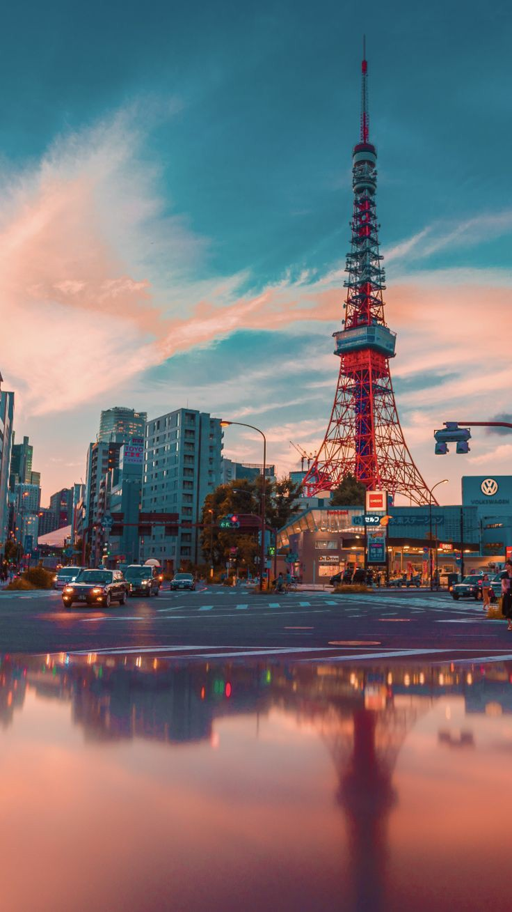
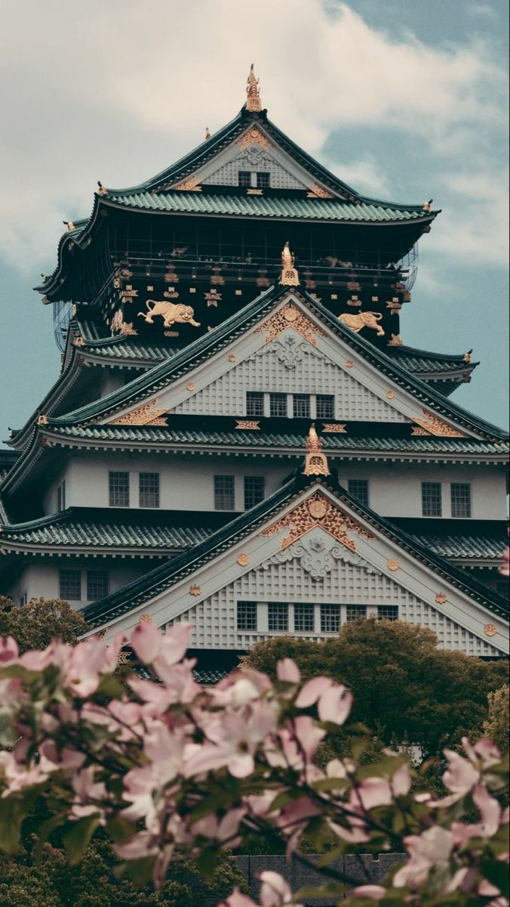
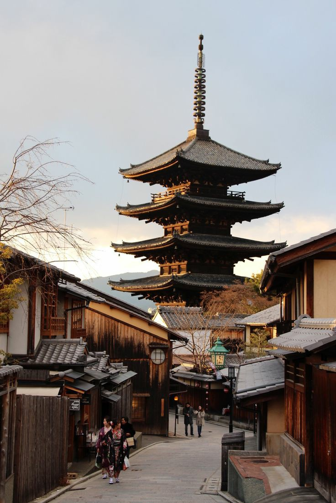
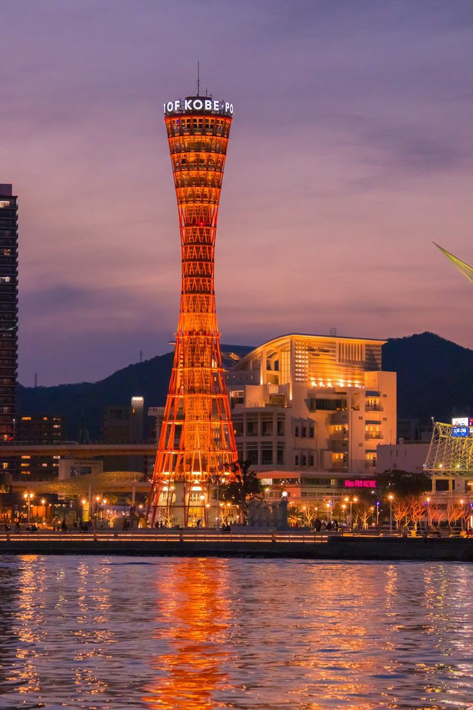
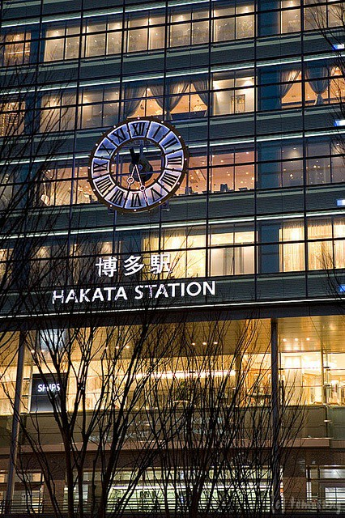

ーーー CITY ーーー
1. TOKYO
Tokyo (東京都 Tōkyō-to) adalah salah satu dari 47 prefektur jepang yang menjadi ibu kota jepang sejak 1869 hingga 2018, tokyo raya menempati peringkat pertama sebagai wilayah metropolitan terpadat di dunia, tokyo menjadi tempat bertakhtanya kaisar jepang, pemerintah jepang, dan parlemen jepang, tokyo mencakup sebagian dari wilayah kanto, kepulauan izu, dan kepulauan ogasawara. Tokyo adalah sebuah kota besar berpenduduk lebih dari 13,8 juta jiwa, pemandangan dari menara tokyo skytree maupun menara tokyo tower yang menjadi simbol kota tokyo, sangat sempurna.
2. OSAKA
Osaka (大阪府 Ōsaka-fu) adalah kota berpenduduk terbesar nomor tiga di jepang setelah tokyo dan yokohama, kota ini terletak di pulau honshu di mulut sungai yodo di teluk osaka, osaka adalah kota terbesar di kawasan keihanshin sebagai pusat industri dan pelabuhan untuk daerah metropolitan osaka-kobe-kyoto. Osaka merupakan sebuah metropolis air yang dikenal dengan sungai-sungainya dan jumlah jembatan terbanyak di jepang. Osaka adalah kota yang memesona dan menenangkan, yang paling terkenal karena makanan, keceriaan, dan kehidupan malamnya dengan sedikit sentuhan sejarah serta budaya, sangat menakjubkan.
3. KYOTO
Kyoto (京都) menjadi ibu kota jepang pada tahun 794 setelah nara dan dibangun menyerupai ibu kota tiongkok pada masa dinasti tang. Kyoto adalah kota dengan sejarah lebih dari 1200 tahun, dan masih banyak bangunan tua tersisa, terkenal dengan jumlah kuil-kuil dan merupakan tempat wisata yang populer bagi orang domestik dan luar negeri. Sebagai salah satu negara paling maju di asia, kyoto mendapat julukan sebagai kota seribu kuil. Kini kota ini memiliki sejumlah atraksi paling populer di jepang, banyak atraksi ini termasuk kyoto gosho dan istana nijo yang terletak tepat di pusat kota, sangat keren.
4. KOBE
Kobe adalah salah satu kota yang terletak di prefektur hyogo, jepang. Kota kobe menjadi kota terbesar kelima jepang, kobe memiliki luas wilayah 552,3 km2 dengan populasi penduduk 1,537 juta. Kota ini dikenal dengan suasana meriah layaknya kota perdagangan internasional, mulai dari makanan, pakaian, dan tempat tinggal hingga budaya. Salah satu ciri khas kota ini adalah kondisi wilayahnya yang diapit oleh gunung dan laut sehingga membuat jalanan di kobe berbukit-bukit, oleh karena itu di sini wisatawan dapat menikmati pemandangan laut dari atas gunung sekalipun, sangat indah.
5. FUKUOKA
Fukuoka (福岡市; Fukuoka-shi) adalah ibu kota prefektur fukuoka dan terletak di pesisir utara pulau kyushu di jepang. Fukuoka adalah kota terpadat di kyushu, kota ini ditetapkan sebagai "kota besar" pada 1 april 1972 dan merupakan pusat ekonomi dan kebudayaan kyushu sejak tahun 1930-an. Kota ini mempunyai luas sebesar 340,03 km² dan penduduk sejumlah 1,380 juta. Daya tarik yang paling terkenal di prefektur fukuoka adalah dazaifu tenmangu, sebuah kuil. Fukuoka mempunyai sebuah bandar udara internasional yang terletak di distrik hakata, bandara fukuoka, sangat istimewa.